library(tidyverse)
library(broom)
library(patchwork)Assumptions of t-Tools
Learning Objectives
- List the assumptions of the two-sample \(t\)-test in order of importance.
- Detect and address violations of independence.
- Detect and address violations of the equal-variance assumption.
- Detect and address non-normality (skew and outliers).
- Apply log transformations and interpret results on the original scale.
Assumptions of 2-Sample \(t\)-Tools
- Assumptions in decreasing order of importance:
- Independence between observational units.
- Equal variance (if assuming \(\sigma_1^2 = \sigma_2^2\)).
- Normality (no severe skew or outliers).
- Each assumption can be checked, and solutions exist for each violation.
1. Independence
Definition: Knowing the value of one observation does not give you any information about the value of another observation.
Example of violation — cluster effects:
- Measuring gene expression levels in two groups (disease vs. control).
- Samples collected by two different technicians.
- Technician 1 tended to produce samples with systematically higher levels.
- Observations within a technician are correlated.
Example of violation — serial effects:
- Measuring expression levels on the same individuals over time.
- Observations on the same person are correlated across time.
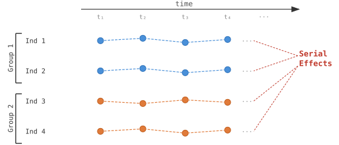
To Detect
- Think carefully about how the data were collected.
- Were different responses measured on the same subject?
- Were data collected in groups?
- Were groups treated differently in ways unrelated to treatment?
- Residual plots (covered in Chapter 8).
- Think carefully about how the data were collected.
Issues When Independence Is Violated
Recall \(\bar{X} - \bar{Y} \sim N(\mu_1 - \mu_2,\; \sigma_1^2/n_1 + \sigma_2^2/n_2)\).
If samples are not independent, the variance formula above is too small.
You have less information than you think.
Consequently: p-values are too small and confidence intervals are too narrow.
Extreme example:
- You have 4 people. Measure each one 50 times.
- Group 1: Person 1 always scores 0; Person 2 always scores 1.
- Group 2: Person 3 always scores 2; Person 4 always scores 3.
- Nominal \(n = 100\) per group, but effective sample size is 2 per group.
- Correct variance estimate: \(\sigma^2 \approx 0.25 / 2 = 0.125\).
- Incorrectly assumed variance: \(\sigma^2 \approx 0.25 / 100 = 0.0025\).
Solutions
- ANOVA with blocking (Chapters 12–13) for cluster effects.
- Longitudinal analysis (Chapter 18) for serial effects.
2. Unequal Variances
Sometimes people assume \(\sigma_1^2 = \sigma_2^2\) (the pooled variance \(t\)-test), because it generalizes more easily to more complex methods.
Under the equal-variance assumption: \[\bar{X} - \bar{Y} \;\sim\; N\!\left(\mu_1 - \mu_2,\; \sigma^2\!\left(\frac{1}{n_1} + \frac{1}{n_2}\right)\right)\] Estimate \(\sigma^2\) with the pooled sample variance: \[s_p^2 = \frac{(n_1 - 1)s_1^2 + (n_2 - 1)s_2^2}{n_1 + n_2 - 2}\]
To Detect
Make side-by-side boxplots; only worry if the spread looks very different.
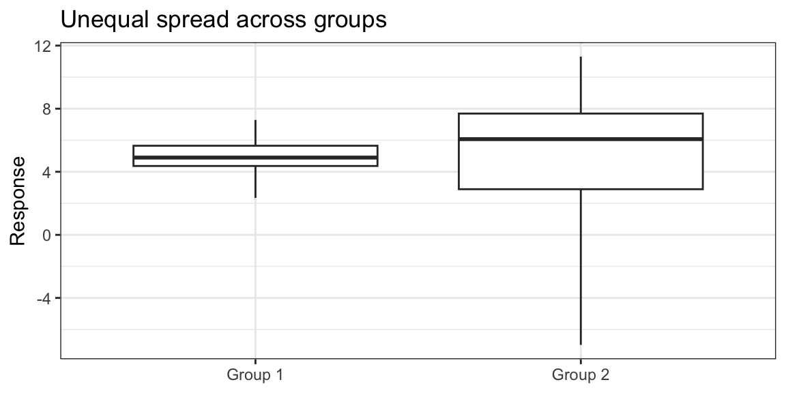
A little (or even moderate) difference is fine
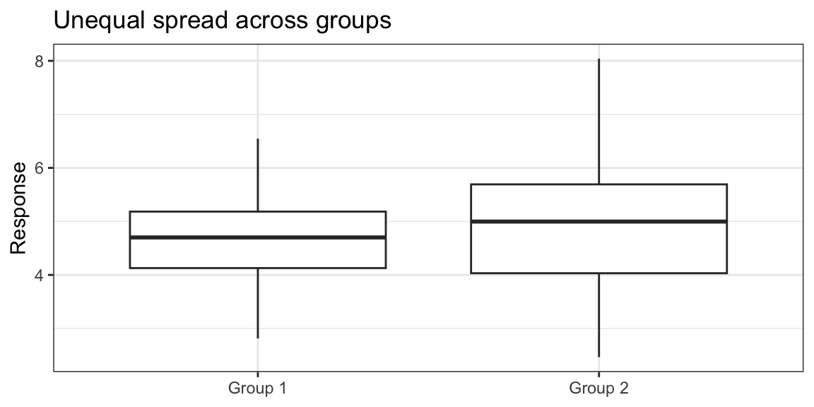
Issues
- If \(\sigma_1^2 \neq \sigma_2^2\) but we assume they are equal, the variance estimate of \(\bar{X} - \bar{Y}\) is wrong.
- This is mainly a problem when \(n_1\) is very different from \(n_2\).
Solution
- Assume unequal variances — this is the default in
t.test()in R, which uses the Satterthwaite approximation for degrees of freedom. - Alternatively, transform the data (folks don’t typically do this).
- Assume unequal variances — this is the default in
3. Normality (Skew)
The \(t\)-test assumes that \(X_1, \ldots, X_{n_1}\) and \(Y_1, \ldots, Y_{n_2}\) are approximately normal, or that the sample size is “large enough” (Central Limit Theorem).
More skew \(\Rightarrow\) larger sample size needed.
Issues
- Confidence intervals do not achieve 95% coverage.
- p-values do not have the correct null interpretation.
- Hard to predict if methods are conservative or liberal
- Exercise: What does “conservative” and “liberal” mean when it comes to confidence intervals? To p-values?
To Detect
- Make quantile-quantile (QQ) plots.
Solutions
- Apply a transformation (see Section 5 below).
- Perform a permutation test.
Checking for Normality with QQ Plots
case0201 <- read_csv("https://dcgerard.github.io/stat_302/data/case0201.csv")
case0301 <- read_csv("https://dcgerard.github.io/stat_302/data/case0301.csv")Some distributions look approximately normal:
case0201 |>
filter(Year == 1978) |>
ggplot(mapping = aes(x = Depth)) +
geom_histogram(bins = 15, color = "black", fill = "white") +
xlab("Beak depth (mm)")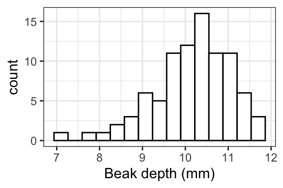
Clearly not all distributions are normal:
case0301 |>
filter(Treatment == "Unseeded") |>
ggplot(mapping = aes(x = Rainfall)) +
geom_histogram(bins = 10, color = "black", fill = "white") +
xlab("Rainfall")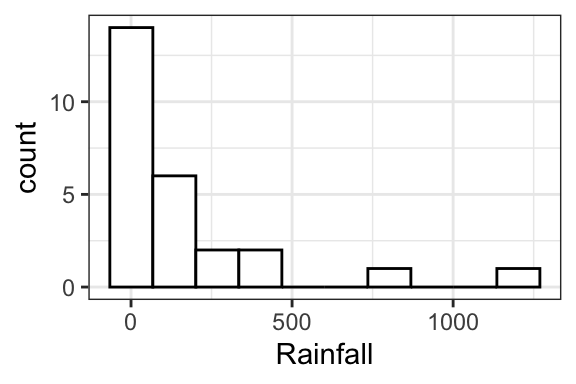
It is sometimes important to check if normality is a valid approximation.
- Is the 68–95–99.7 rule approximately correct for this dataset?
- Do the percentiles (quantiles) of the data match those of the theoretical normal distribution?
- Compare the \(p\)th percentile of the data to the \(p\)th percentile of a \(N(\bar{x}, s^2)\) distribution. If they are close, normality is a good approximation.
beak78 <- case0201$Depth[case0201$Year == 1978]
mu <- mean(beak78)
sigma <- sd(beak78)
qnorm(p = 0.2, mean = mu, sd = sigma)[1] 9.37529quantile(x = beak78, probs = 0.2) 20%
9.46 qnorm(p = 0.7, mean = mu, sd = sigma)[1] 10.61356quantile(x = beak78, probs = 0.7) 70%
10.6 qnorm(p = 0.9, mean = mu, sd = sigma)[1] 11.2999quantile(x = beak78, probs = 0.9) 90%
11.14 A quantile-quantile (QQ) plot plots the observed quantiles against the quantiles of a \(N(\bar{x}, s^2)\) distribution. If the points lie close to a straight line, the normal approximation is approximately correct.
case0201 |>
filter(Year == 1978) |>
ggplot(mapping = aes(sample = Depth)) +
geom_qq() +
geom_qq_line()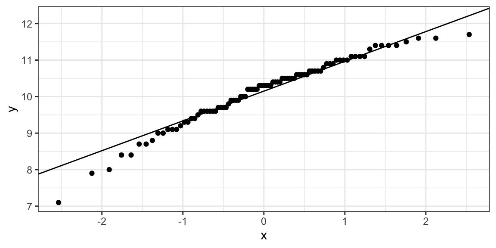
What does a “good” QQ-plot look like? The panel labelled 0 below shows the real beak data; the others show data simulated from \(N(\bar{x}, s^2)\) — perhaps a little non-normal?
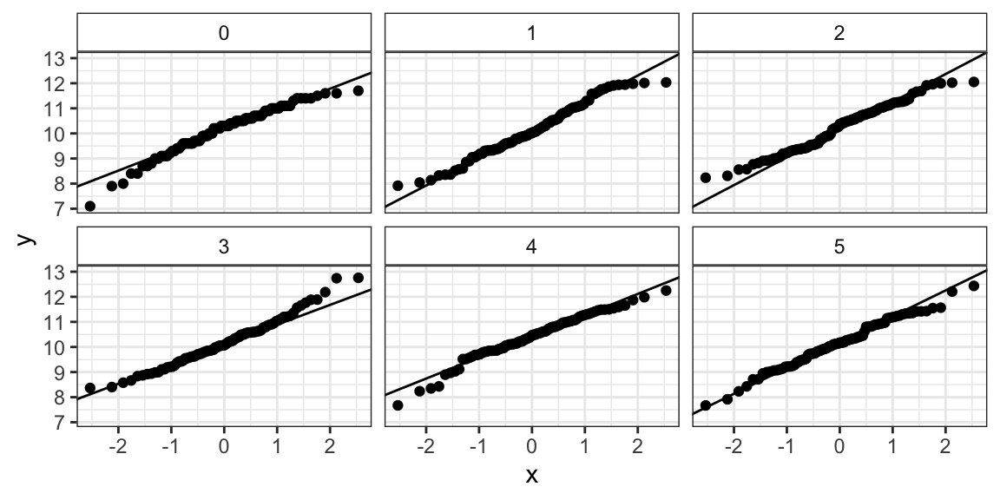
Common departures from normality and their QQ-plot signatures (histogram on left, QQ-plot on right):
Skewed right — curve arcs upward:
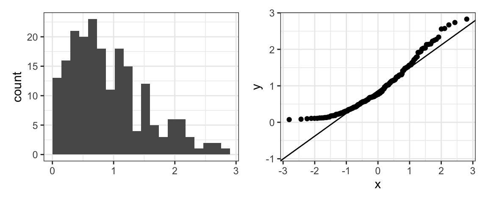
Skewed left — curve arcs downward:
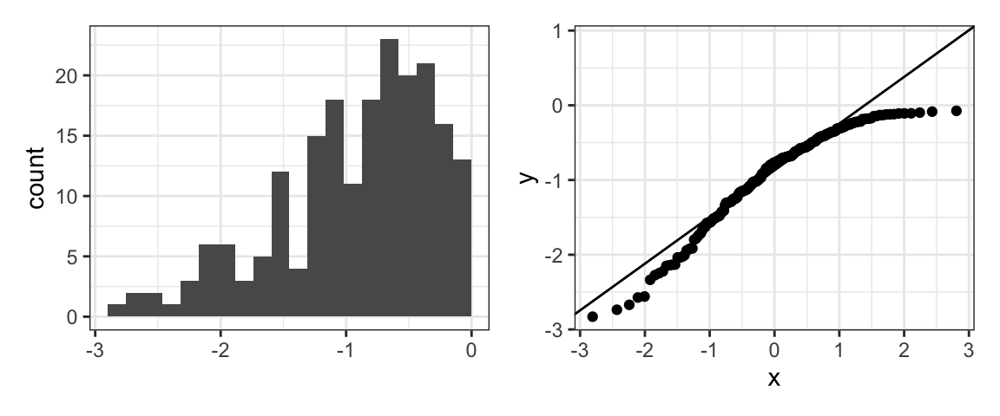
Outliers — isolated points far from the line:
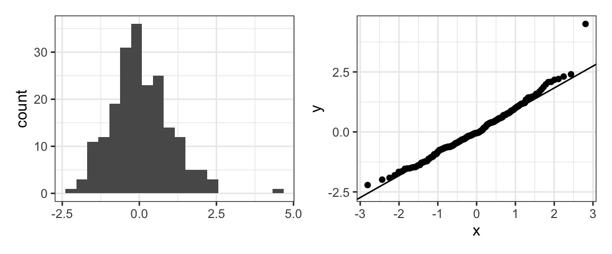
Heavy tails — S-shaped curve:
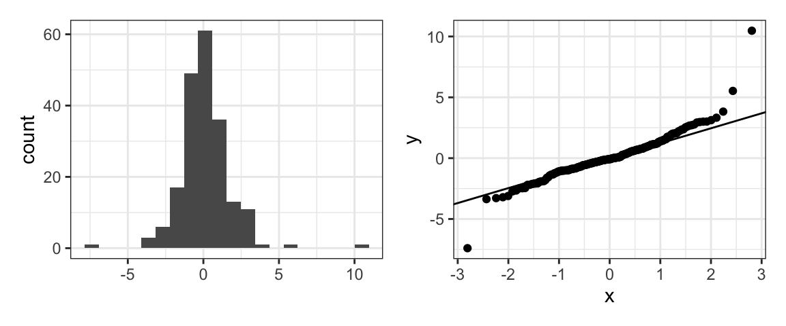
Light tails — reverse S-shaped curve:
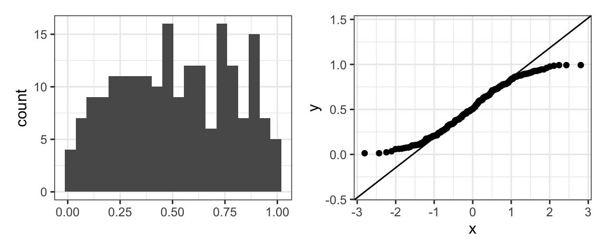
The rainfall data clearly violates normality:
case0301 |>
filter(Treatment == "Unseeded") |>
ggplot(mapping = aes(sample = Rainfall)) +
geom_qq() +
geom_qq_line()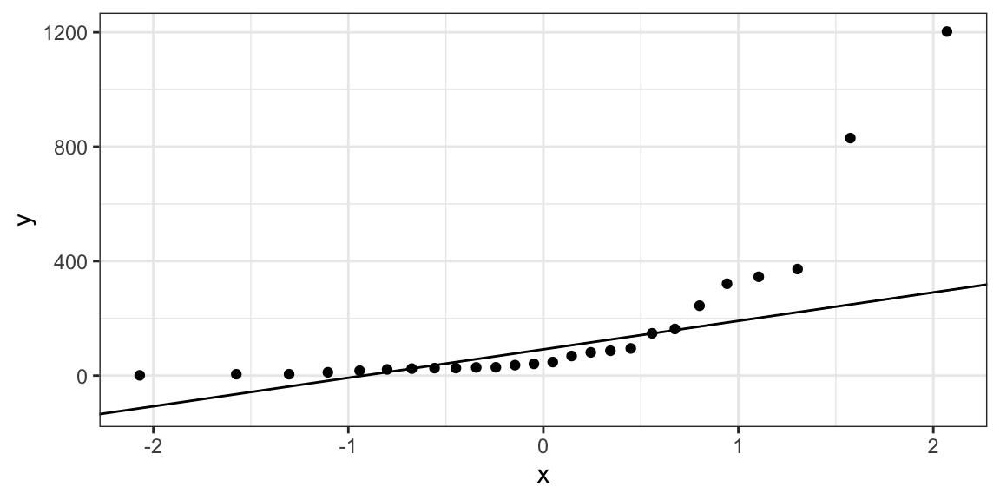
4. Normality (Outliers)
To Detect
- Histograms, boxplots, QQ-plots.
Issues
- Results are unstable — removing a single point can change conclusions.
Solution
- Run the analysis with and without the outlier.
- If answers are the same, do not remove it.
- If answers differ, either:
- Use a robust analysis (Chapter 4).
- Report both analyses.
Central Limit Theorem
The Central Limit Theorem (CLT) justifies using the \(t\)-distribution even when the population is not perfectly normal, provided the sample size is large enough. Below we demonstrate the CLT using birth-weight data.
rain_all <- read_csv("https://dcgerard.github.io/stat_302/data/case0301.csv")$Rainfall
ggplot(data.frame(x = rain_all), aes(x = x)) +
geom_histogram(fill = "white", color = "black", bins = 30) +
xlab("Rainfall (acre-feet)")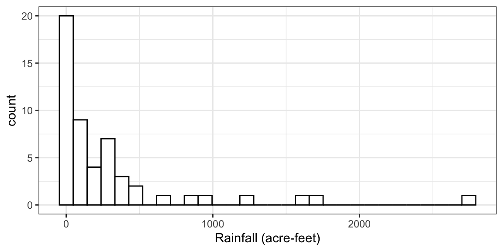
We draw repeated bootstrap samples of size \(n\) and compute the sample mean each time, then examine the distribution of \(\bar{X}\).
xbarvec5 <- replicate(n = 10000,
expr = mean(sample(rain_all, size = 5, replace = TRUE)))
xbarvec10 <- replicate(n = 10000,
expr = mean(sample(rain_all, size = 10, replace = TRUE)))
xbarvec50 <- replicate(n = 10000,
expr = mean(sample(rain_all, size = 20, replace = TRUE)))
xbarvec100 <- replicate(n = 10000,
expr = mean(sample(rain_all, size = 100, replace = TRUE)))
xbarvec1000 <- replicate(n = 10000,
expr = mean(sample(rain_all, size = 1000, replace = TRUE)))As \(n\) increases, the variance of \(\bar{X}\) decreases:
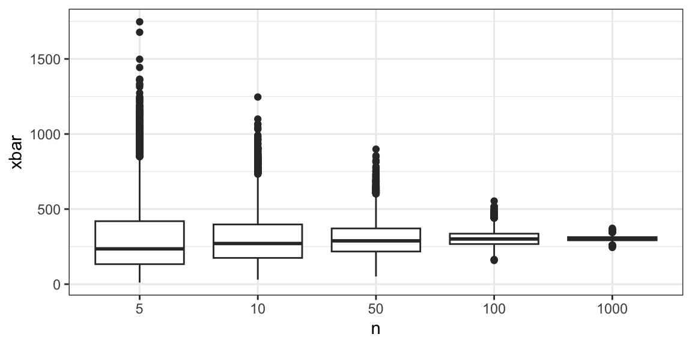
And the distribution of \(\bar{X}\) becomes increasingly normal (histograms):
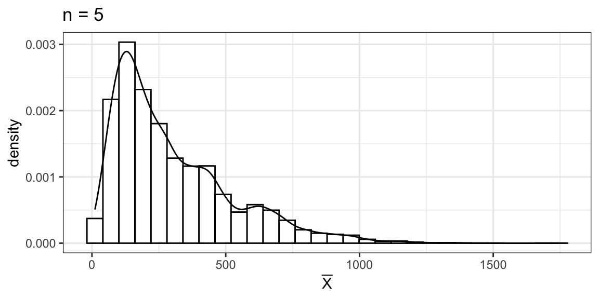
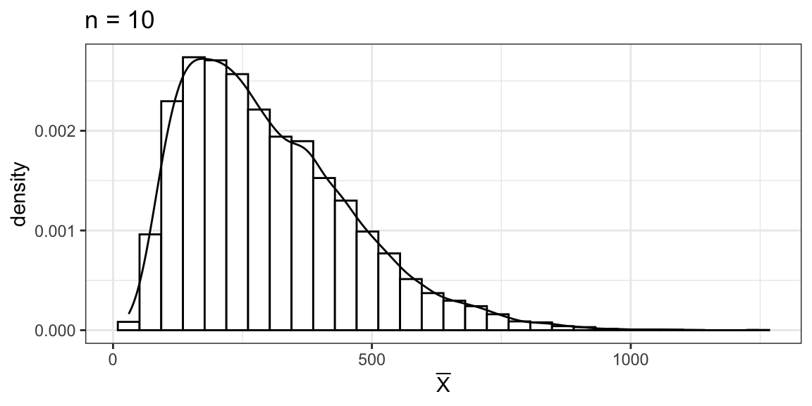
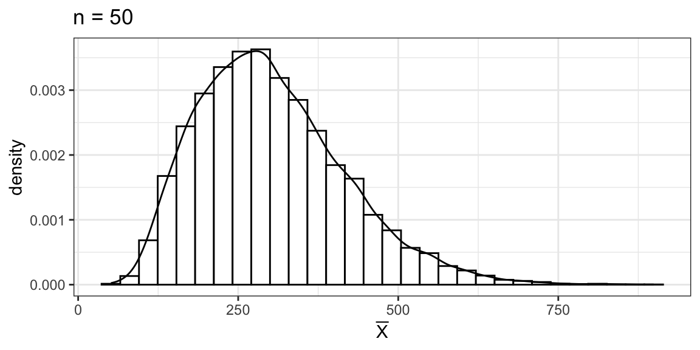
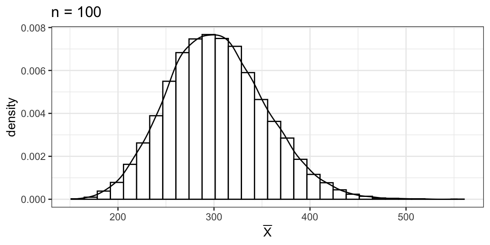
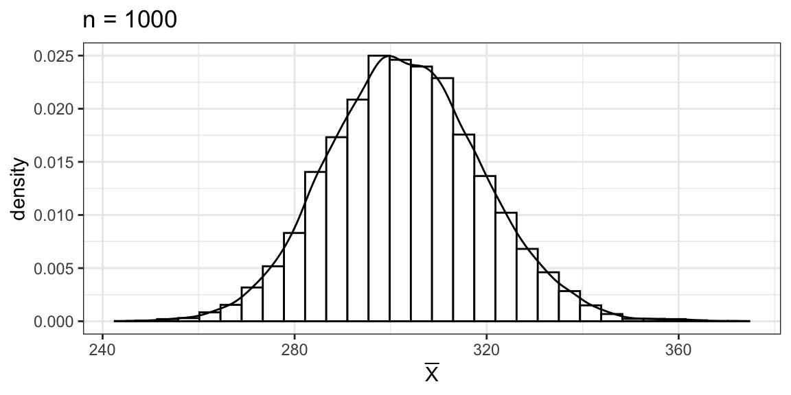
The same pattern is visible in QQ-plots:
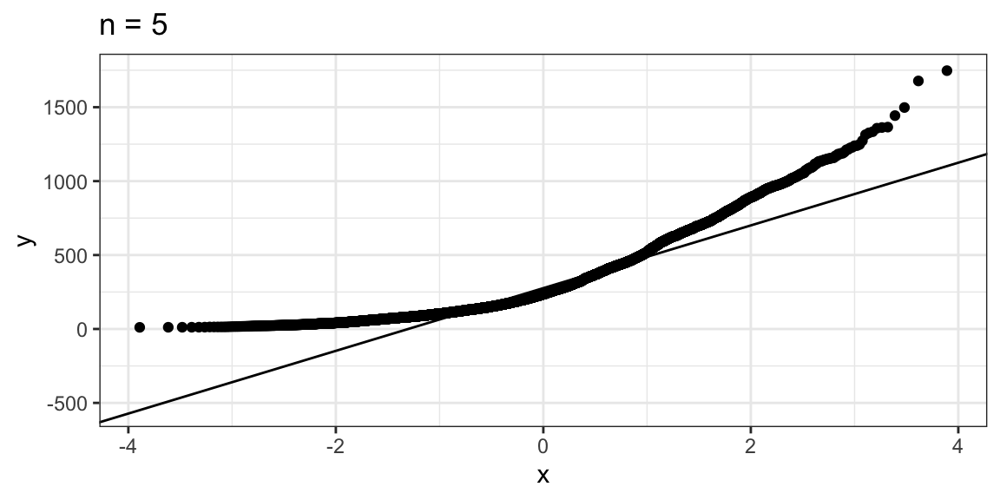
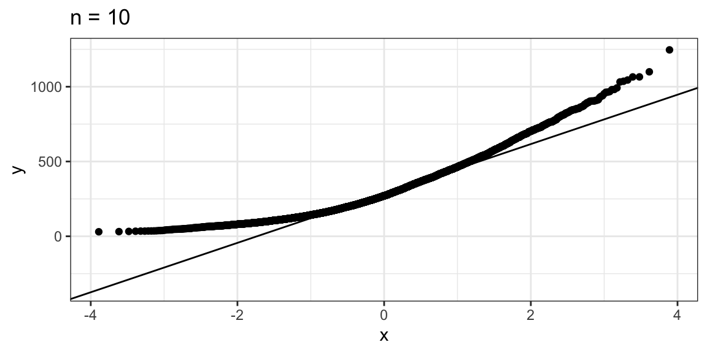
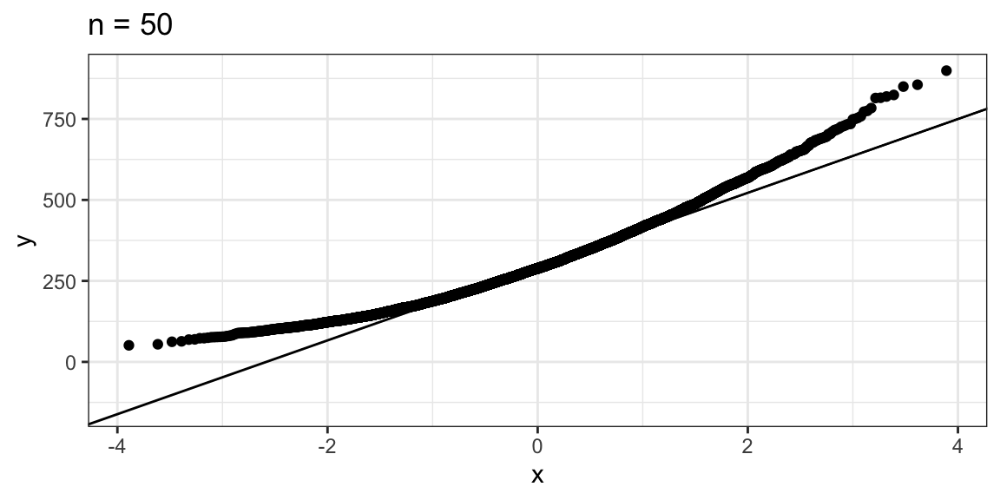
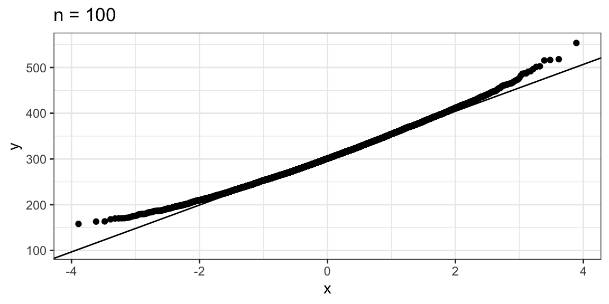
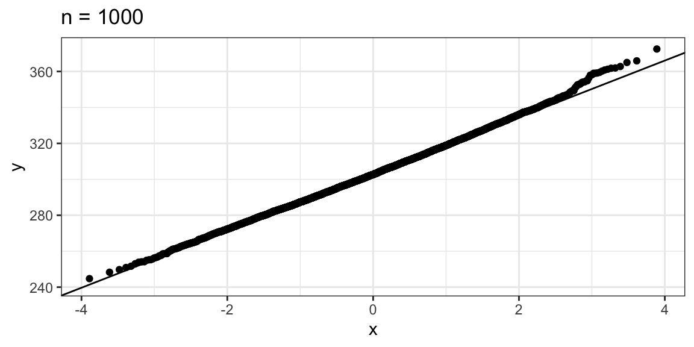
Transformations
Many transformations are possible: \(\sqrt{y}\), \(\arcsin(\sqrt{y})\), \(\log(y)\).
Log is usually the only one used in practice for t-methods.
When to use log:
- Values are positive.
- Larger mean \(\Rightarrow\) larger variance.
- Data are skewed.
- Log makes such data symmetric and stabilizes variance.
Interpreting Log Transformations
Let \(W_i = \log(Y_i)\) and \(Z_j = \log(X_j)\) in the two-sample model: \[W_i = \mu + \varepsilon_i \qquad Z_j = \mu + \delta + \xi_j\]
Then: \[\delta = \text{Average}(Z) - \text{Average}(W) = \text{Average}(\log X) - \text{Average}(\log Y)\]
We want to interpret \(\delta\) on the original \(X, Y\) scale.
Important caveat: \(\log(\text{Average}(X)) \neq \text{Average}(\log X)\).
- Example: \(X = 2, 4\).
- \(\log_2 X = 1, 2 \Rightarrow \text{Average}(\log_2 X) = 1.5\).
- \(\text{Average}(X) = 3 \Rightarrow \log_2(3) \approx 1.58\).
- So \(E[X] \neq e^\delta \cdot E[Y]\) in general.
What is true: if \(\log(X)\) and \(\log(Y)\) are both symmetric, \[e^\delta = \frac{\text{Median}(X)}{\text{Median}(Y)}\]
- \(e^\delta\) is the multiplicative difference in medians.
Procedure:
- Log-transform the data.
- Run
t.test()on the log-transformed values to get \(\hat{\delta}\) and a CI \((\hat{\delta}_L, \hat{\delta}_U)\). - Exponentiate: \(e^{\hat{\delta}}\) estimates the ratio of medians; \((e^{\hat{\delta}_L}, e^{\hat{\delta}_U})\) is the CI for the ratio.
Worked Example: Rainfall Data
Researchers studied whether cloud seeding increases rainfall. The treatment (seeded vs. unseeded) was randomly assigned to days, making this a randomized experiment.
case0301 <- read_csv("https://dcgerard.github.io/stat_302/data/case0301.csv")Exploratory Data Analysis
ggplot(case0301, aes(x = Treatment, y = Rainfall)) +
geom_boxplot()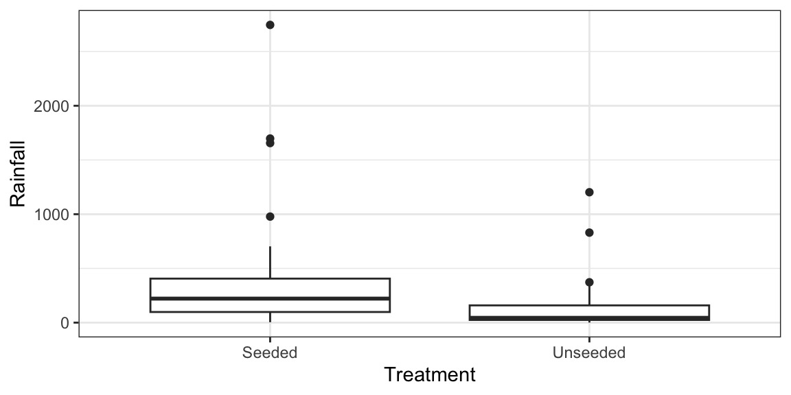
ggplot(case0301, aes(x = Rainfall)) +
geom_histogram(bins = 10) +
facet_wrap(~ Treatment)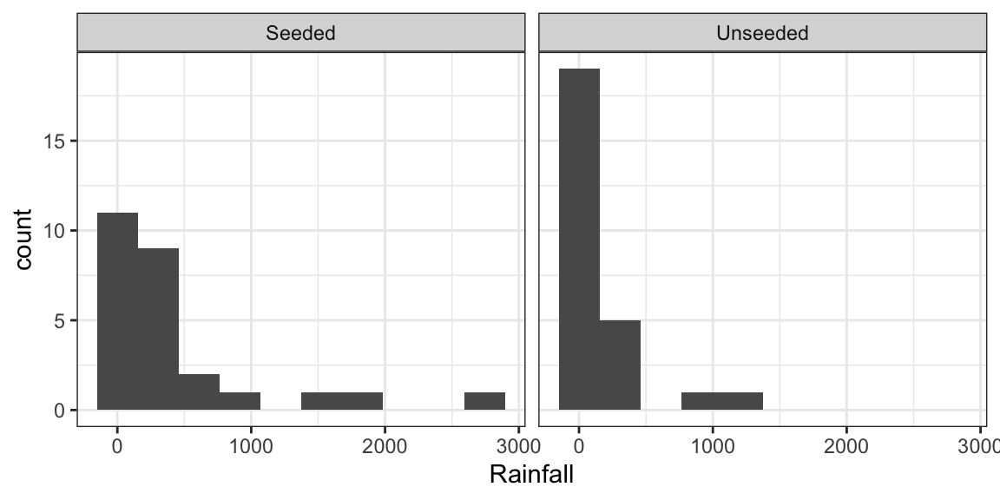
ggplot(case0301, aes(sample = Rainfall)) +
geom_qq() +
geom_qq_line() +
facet_wrap(~ Treatment)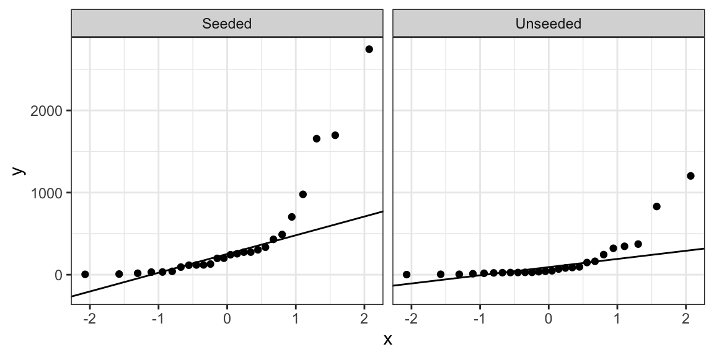
The data are severely right-skewed with larger variance in the seeded group. A log transformation is appropriate: values are positive, larger mean implies larger variance, and the data are skewed.
Apply Log Transformation
case0301 <- case0301 |>
mutate(logRainfall = log(Rainfall))ggplot(case0301, aes(x = Treatment, y = logRainfall)) +
geom_boxplot()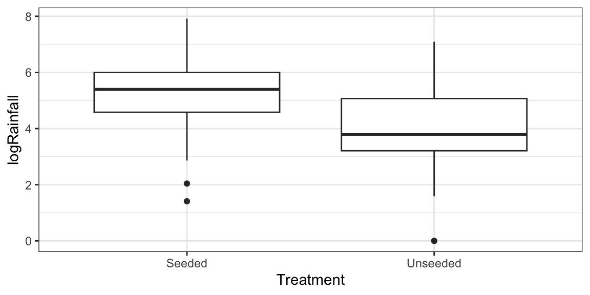
ggplot(case0301, aes(x = logRainfall)) +
geom_histogram(bins = 10) +
facet_wrap(~ Treatment)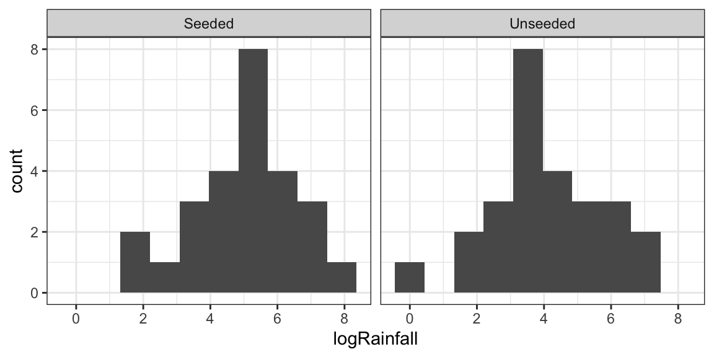
ggplot(case0301, aes(sample = logRainfall)) +
geom_qq() +
geom_qq_line() +
facet_wrap(~ Treatment)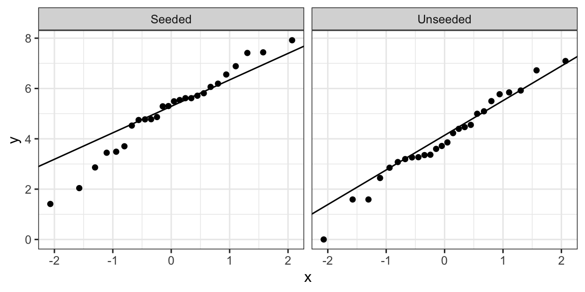
The log-transformed data look much more approximately normal.
Model
- \(Z_i\) = rainfall on unseeded days; \(Y_i = \log(Z_i)\).
- \(Z_i^*\) = rainfall on seeded days; \(Y_i^* = \log(Z_i^*)\).
- Location-shift model on the log scale: \(Y_i^* = Y_i + \delta\), which implies \(Z_i^* = e^\delta Z_i\).
- \(e^\delta\) is the multiplicative effect of seeding on rainfall.
- \(e^\delta = 2\): seeding doubles rainfall.
- \(e^\delta = 3\): seeding triples rainfall.
Hypotheses
\[H_0: \delta = 0 \qquad H_a: \delta \neq 0\]
Analysis
case0301 |>
t.test(logRainfall ~ Treatment, data = _) |>
tidy() ->
tout
tout |> select(estimate, p.value, conf.low, conf.high)# A tibble: 1 × 4
estimate p.value conf.low conf.high
<dbl> <dbl> <dbl> <dbl>
1 1.14 0.0141 0.241 2.05## Estimated ratio of median rainfall (Seeded / Unseeded):
exp(tout$estimate)[1] 3.138614## 95% CI for the ratio of medians:
exp(c(lower = tout$conf.low, upper = tout$conf.high)) lower upper
1.272330 7.742406 Conclusion
We estimate that seeding results in a 3.1-fold increase in median rainfall (\(p\)-value 0.014, 95% CI: 1.3 to 7.7 times). Note the causal language — cloud seeding was randomly assigned, so a causal conclusion is warranted.